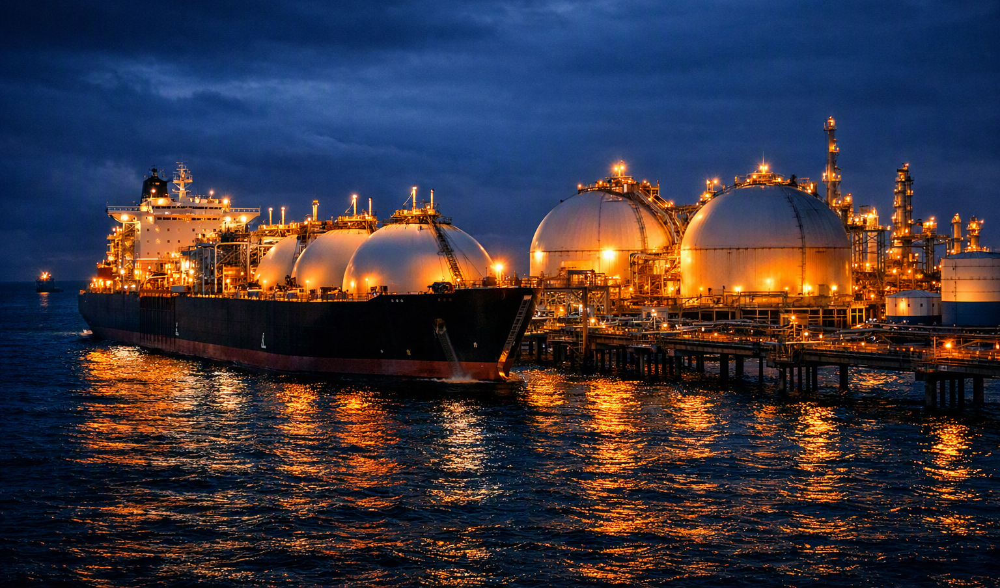

Gas is more difficult to store than oil mainly because its volume at normal temperature and pressure is 1,000 times that of oil for the same amount of energy content.
In small densely populated countries like the United Kingdom, when coal was the main source of fuel in the early twentieth century, an infrastructure was built to distribute gas from coal throughout the country using a pipeline system from the gas plants to homes in major towns and cities. When North Sea gas was discovered, the system was modified and a pipeline system was created from the onshore terminals to domestic consumers. The system stores gas by increasing the pressure in the main pipeline. Storage is also created by pumping gas back into depleted oil and gas reservoirs.
Where pipeline systems are not available, gas is distributed for domestic use in pressurized containers as propane or butane, known as liquefied petroleum gas (LPG). The liquefied gas is stored in cylindrical or spherical containers at refineries and terminals and can be transported by road to residential storage tanks or in smaller exchangeable cylinders.
By cooling petroleum gas to −162 °C, it condenses to a liquid and 1/600th of its volume. This is called liquefied natural gas (LNG). The method is used for bulk transport of gas and is carried out at plants usually close to the source of the gas. LNG can be transported over long distances by special tankers by road or sea. It is stored at the LNG plant and at its destination in special insulated storage tanks.
Russia has the largest reserves of natural gas in the world and transports most of its gas by pipeline. It supplies one quarter of Europe's gas requirements and 80% of this is by pipeline through Ukraine.
Russia is also using LNG from its first offshore platforms in Sakhalin Island. Natural gas is transported from the platforms to onshore terminals then by pipeline to the southern tip of the island which is ice-free during winter. Here it is processed at an LNG plant and distributed by tanker to Asia-Pacific markets.